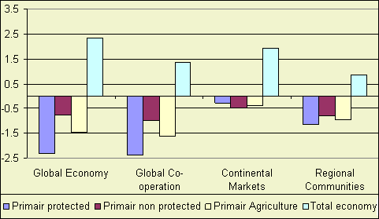
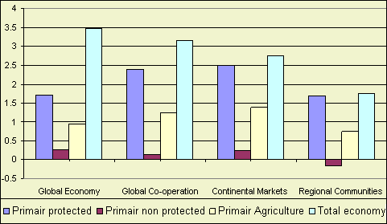

Highlight
Real farm income growth per employee is low for primary agricultural products
in relation to the income growth in the rest of the economy. For protected commodities
(sugar, cattle, milk) the growth is highly negative in the liberalization scenarios
(Global Economy, Global Cooperation or A1 en B1). In the regionalization scenarios the difference between
protected and unprotected commodities is limited.

Figure 1 - Real farm income in EU15 per employee, yearly
growth rates
Explanation
Overall economic growth has an important impact on real farm income: consumers
have higher incomes and consumption patterns. Reduction of border support and
domestic support have a significant negative impact on real agricultural income
for protected commodities in the global scenarios (Global Economy and Global Cooperation).

Figure 2 - Real farm income in EU12 per employee, yearly
growth rates
Real farm income growth for protected commodities is higher than for non protected
products. Changes in border support and domestic support due to accession to
EU have a positive impact on real farm income. The impact of the biofuel directive
on farm income is also positive.
Explanation
Overall economic growth has an important impact on real farm income: consumers
have higher incomes and consumption patterns. Accession to the common EU market
(reduction of border support) and domestic support have a positive impact on
real agricultural income for protected commodities. The contribution is highest
in the regionalisation scenarios (Continental Markets (A2) and Regional Communities (B2)) where domestic support
is sustained and not all countries get equal access to the EU15 market (preferential
access sustained).
In comparison with the EU15 real farm income growth is higher, especially for
protected commodities. Furthermore, the contribution of domestic support and
border support is positive in stead of negative.
Implementation of the biofuel directive has a positive impact on farm income
for the biofuel products (Oilseeds, grains and to a lesser extend sugar).